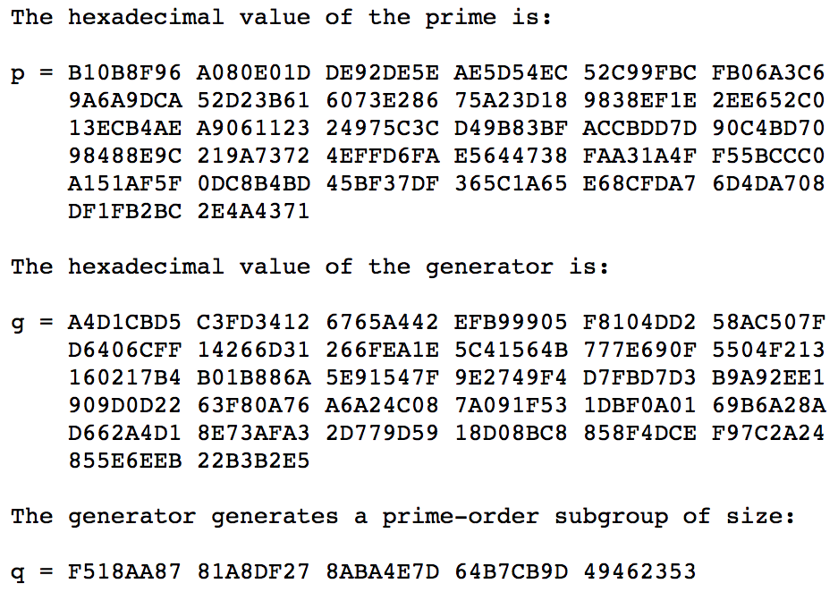

<!DOCTYPE html>
<html>
  <head>
    <title>漫谈网络通讯加密 – Wyman的技术博客 – 写作主题覆盖：游戏开发技术、图形学、机器学习。QQ：234707482</title>

        <meta charset="utf-8" />
    <meta content='text/html; charset=utf-8' http-equiv='Content-Type'>
    <meta http-equiv='X-UA-Compatible' content='IE=edge'>
    <meta name='viewport' content='width=device-width, initial-scale=1.0, maximum-scale=1.0'>
    <meta name="baidu-site-verification" content="0OpfO1OtHA" />
    
    <meta name="description" content="" />
    <meta property="og:description" content="" />
    
    <meta name="author" content="Wyman的技术博客" />

    
    <meta property="og:title" content="漫谈网络通讯加密" />
    <meta property="twitter:title" content="漫谈网络通讯加密" />
    

    <!--[if lt IE 9]>
      <script src="http://html5shiv.googlecode.com/svn/trunk/html5.js"></script>
    <![endif]-->

    <link rel="stylesheet" type="text/css" href="/style.css" />
    <link rel="alternate" type="application/rss+xml" title="Wyman的技术博客 - 写作主题覆盖：游戏开发技术、图形学、机器学习。QQ：234707482" href="/feed.xml" />

    
	<!-- Google Analytics -->
	<script>
		(function(i,s,o,g,r,a,m){i['GoogleAnalyticsObject']=r;i[r]=i[r]||function(){
		(i[r].q=i[r].q||[]).push(arguments)},i[r].l=1*new Date();a=s.createElement(o),
		m=s.getElementsByTagName(o)[0];a.async=1;a.src=g;m.parentNode.insertBefore(a,m)
		})(window,document,'script','//www.google-analytics.com/analytics.js','ga');

		ga('create', 'UA-65954265-1', 'auto');
		ga('send', 'pageview', {
		  'page': '/crypto-1/',
		  'title': '漫谈网络通讯加密'
		});
	</script>
	<!-- End Google Analytics -->
	<!-- Baidu Analytics -->
	<script>
		var _hmt = _hmt || [];
		(function() {
		  var hm = document.createElement("script");
		  hm.src = "//hm.baidu.com/hm.js?0dc968591d8c64196a37eca9ca4f86b3";
		  var s = document.getElementsByTagName("script")[0]; 
		  s.parentNode.insertBefore(hm, s);
		})();
	</script>
	<!-- End Baidu Analytics -->

    <!-- Created with Jekyll Now - http://github.com/barryclark/jekyll-now -->
  </head>

  <body>
    <div class="wrapper-masthead">
      <div class="container">
        <header class="masthead clearfix">
          <a href="/" class="site-avatar"></a>

          <div class="site-info">
            <h1 class="site-name"><a href="/">Wyman的技术博客</a></h1>
            <p class="site-description">写作主题覆盖：游戏开发技术、图形学、机器学习。QQ：234707482</p>
          </div>

          <nav>
            <a href="/">Blog</a>
            <a href="/about">About</a>
          </nav>
        </header>
      </div>
    </div>

    <div id="main" role="main" class="container">
      <script type="text/javascript"
    src="http://cdn.mathjax.org/mathjax/latest/MathJax.js?config=TeX-AMS-MML_HTMLorMML">
    </script>
<article class="post">
    <h1>漫谈网络通讯加密</h1>
    <h3>Tags: <a href="/tag/crypto/" rel="tag">crypto</a></h3>
    <div class="entry">
        <!--more-->

<h2>几种加密算法</h2>

<h3><a href="https://en.wikipedia.org/wiki/RSA_(cryptosystem)">RSA</a> （Rivest–Shamir–Adleman)（1977年）</h3>

<p>基于大数质因子分解问题。</p>

<h3><a href="https://en.wikipedia.org/wiki/Diffie%E2%80%93Hellman_key_exchange">DH</a>（Diffie-Hellman key exchange）（1976年）</h3>

<p>密钥交换算法。</p>

<p>基于离散对数问题。</p>

<h3><a href="https://en.wikipedia.org/wiki/Elliptic-curve_cryptography">ECC</a>（Elliptic-curve cryptography） （1985年）</h3>

<p>基于在椭圆曲线上的离散对数的求取问题。</p>

<h2>DH算法</h2>

<h3>key exchange例子（ <a href="https://scotthelme.co.uk/perfect-forward-secrecy/">from here</a> )：</h3>

<ol>
<li>Alice和Bob首先线下商量好，使用<strong>p (prime, 质数) = 23、g (generator, 生成器) = 5</strong>作为通讯基础（p和g不需要绝对的保密，泄露了也没事）</li>
<li>每次Alice和Bob想要建立通讯(连接)时，Alice自己随机生成一个在范围[1, p - 1]的数：a = 6</li>
<li>同样，Bob自己也随机一个：b = 15</li>
<li>Alice计算： \( A = ( g^{a} ) \% p = ( 5^{6} ) \% 23 =  15625 \% 23 = 8 \)，把A发给Bob</li>
<li>Bob计算： \( B = ( g^{b} ) \% p = ( 5^{15} ) \% 23 =  30517578125 \% 23 = 19 \)，把B发给Alice</li>
<li>Alice收到B后，可计算出<strong>对称密钥</strong>：\( s_{Alice} = ( B^{a} ) \% p = ( 19^{6} ) \% 23 = 47045881 \% 23 = 2 \)</li>
<li>Bob收到A后，可计算出<strong>对称密钥</strong>：\( s_{Bob} = ( A^{b} ) \% p = ( 8^{15} ) \% 23 = 35184372088832 \% 23 = 2 \)</li>
</ol>

<h3>数学原理</h3>

<p>其中，用到了<strong>模幂运算</strong>的基本定理，对于任意自然数a、b、n，有：</p>

<p>\[ ab\  \%\  n =  ( ab\ \%\  n) \  \%\  n =  ( (a\ \%\  n)  (b\ \%\  n) ) \ \%\  n \]</p>

<p>应用到幂运算：</p>

<p>\[ a^{b}\  \%\  n =  ( a \cdots  a ) \  \%\  n =  ( (a\ \%\  n) \cdots  (a\ \%\  n) ) \  \%\  n =  ( \ (a\ \%\  n)  ^{b}\  ) \ \%\  n \]</p>

<p>于是有：</p>

<p>\[ s_{Alice} = ( B^{a} ) \% p =  (\  (\  g^{b} ) \% p\  ) ^{a}\   ) \% p =   (  \ g \% p\  ) ^{ab} \  ) \% p =  \ g ^{ab} \% p \]</p>

<p>同理：</p>

<p>\[ s_{Bob} = ( A^{b} ) \% p =  (\  (\  g^{a} ) \% p\  ) ^{b}\   ) \% p =   (  \ g \% p\  ) ^{ab} \  ) \% p =  \ g ^{ab} \% p \]</p>

<p>显然：</p>

<p>\[  s_{Alice} = s_{Bob}  \]</p>

<p>这样就协商出了对称的密钥。</p>

<h3>为什么可行</h3>

<p>从攻击者角度看，攻击者最多只能获得以下信息：</p>

<ul>
<li>p：23</li>
<li>g：5</li>
<li>A：8</li>
<li>B：19</li>
</ul>

<p>攻击者目标是获得s（serect）。要计算s，就是算2条式子：</p>

<p>\[ s = ( B^{a} ) \% p \]</p>

<p>\[ s = ( A^{b} ) \% p \]</p>

<p>显然，攻击者只需要破解出a或b，就能得到s。</p>

<p>又因为有：</p>

<p>\[ A = ( g^{a} ) \% p \]</p>

<p>\[ B = ( g^{b} ) \% p \]</p>

<p>所以破解a或b的方法是：</p>

<p>\[ a = log_{g}^{A} \% p \]</p>

<p>\[ b = log_{g}^{B} \% p \]</p>

<p>这看似很简单的算术（对数运算和取模运算），其实是很难算的。目前为止没有找到一个快速计算对数的算法。</p>

<p>关键在于<strong>p这个素数要足够大</strong>，那么以现在的计算机计算速度，就很难通过A（或B）、g、p这3个参数算出a，这被称为<a href="https://en.wikipedia.org/wiki/Discrete_logarithm">离散对数难题</a>。</p>

<p>这里需要注意，难的是<strong>离散对数</strong>，即有log和mod运算并且参数是整数；若单单只有log运算，是不难的。</p>

<h3>p、g的选取问题</h3>

<p>涉及到了一些数论的概念：</p>

<ul>
<li><a href="https://en.wikipedia.org/wiki/Greatest_common_divisor">最大公约数gcd</a></li>
<li><a href="https://en.wikipedia.org/wiki/Multiplicative_order">数论阶</a></li>
<li><a href="https://en.wikipedia.org/wiki/Primitive_root_modulo_n">原根</a></li>
</ul>

<p>首先明确下：</p>

<ul>
<li>p必须是素数，且必须是大数(1024-2048bits)，算法才安全</li>
<li>g不需要是素数，且不需要很大</li>
</ul>

<p>p、g不需要自己挑选，可以直接用<a href="https://tools.ietf.org/html/rfc5114">rfc5114</a>给定的值。</p>

<p>例如<a href="https://tools.ietf.org/html/rfc5114#section-2.1">1024-bit MODP Group with 160-bit Prime Order Subgroup</a>:</p>

<p></p>

<p>再讲下去就是深入密码学、数论了，按住不表。</p>

<h2><strong>完全前向保密</strong> PFS(Perfect Forward Secrecy)</h2>

<h3>没有PFS之前：</h3>

<ul>
<li>如果攻击者曾经窥探并保存了用户和服务器的加密数据流，且包括被公钥加密的对称密钥</li>
<li>如果有一天攻击者通过某种办法获得了服务器私钥</li>
<li>攻击者同时拥有了：“用公钥加密的对称密钥”、“私钥”</li>
<li>攻击者用“私钥”对“用公钥加密的对称密钥”解密，获得了对称密钥</li>
<li>攻击者此时就可以用破解出来的对称密钥对已存的历史加密数据做解密</li>
</ul>

<h3>基于DH的PFS：</h3>

<ul>
<li>不再使用公钥加密对称密钥的方案</li>
<li>改为用DH密钥交换算法（key exchange），协商对称密钥，可以直接明文传输协商时需要的信息（并不怕这些信息被窃取）</li>
<li>每次会话都协商新的对称密钥</li>
<li>因为公钥私钥没有用来加密对称密钥了，所以即使服务器私钥被盗了也不会导致历史对称密钥被破解</li>
<li>即使单次会话的对称密钥被破解了，也不会影响到别的会话</li>
</ul>

<h3>为什么可行</h3>

<p>关键在于，用于生成会话密钥的“数据”，根本就没通过网络发送出去。而用公钥加密的密钥，本身就是通过网络传输的。</p>

<p>后者显然更容易被攻击，主要获得私钥并记录了整个会话的数据流，就可以破解了。</p>

<p>而前者，对称密钥的协商，根本没有用到公钥私钥，经过网络的也不是什么被加密后的密钥，而只是协商信息。攻击者要想破解某次会话的内容，只能从该次会话的加密数据流入手，没有他法。</p>

<h3>问题</h3>

<p>要做到perfect，意味着每次会话都要协商密钥，意味着增加了计算开销，不然不能保证密钥的转瞬即逝性质（ephemeral）。</p>

<h2>通讯的认证</h2>

<p>认证问题是指，如何确定和自己通讯的对方不是其他假冒者？</p>

<p>目前有2个主要的解决方案：消息验证码（message authentication code，MAC）和数字签名（digital signature）。</p>

<h3>消息验证码</h3>

<p>前提：</p>

<ol>
<li>通讯双方需要先约定好一个密钥，称为<strong>共享密钥</strong>，双方都把它安全地存起来</li>
<li>对任意长度的消息数据，用共享密钥可以计算出对应的固定长度的MAC</li>
<li>计算MAC必须用到共享密钥，除非密钥泄露，否则第三者无法计算出MAC值</li>
</ol>

<p>流程：</p>

<ol>
<li>协商密钥</li>
<li>发送方对消息计算MAC值</li>
<li>发送方把消息和MAC值都发给对方</li>
<li>对方收到消息后，也用共享密钥计算MAC值，并与收到的MAC值比对</li>
<li>如果2个MAC值一致，那么消息确实来自于发送方</li>
</ol>

<p>问题：</p>

<h4>各种问题：</h4>

<p>一，密钥协商问题（上面已提过）。</p>

<p>二，重放攻击(replay attack)：攻击者窃听通讯双方（例如2个银行）的数据，把汇款消息保存了下来（带有MAC值），然后重复发送这个汇款消息，接收方就会重复地向发送方发起汇款。其中，攻击者并不需要破解消息。</p>

<p>解决方法：每条消息都加序号，序号必须保证递增，从而每条消息的序号唯一；消息加时间戳，但时钟同步和时钟精度又是新的问题；每个消息加nonce，一个只能用一次随机数。</p>

<p>三，密钥推测攻击：应确保攻击者不能通过MAC值逆向出共享密钥，否则攻击者就可以伪造发包了。</p>

<p>四，对第三方证明问题：共享密钥只能保证2个人之间的通讯认证，但是如果多于2个人时，理论上共享密钥无法解决认证问题。</p>

<p>例子：用户A向银行B用共享密钥传输了一个取款消息，如果B取款前需要告知C“A申请取款”，C是否可以相信A真的发出了取款消息，还是说消息是B杜撰的？答案是C没有办法知道。</p>

<p>五，防止否则问题：就上面的取款例子，如果A真的发起了取款消息，但是事后又矢口否认，A认为是B杜撰了这个消息，此时事实就说不清了，A和B都有共享密钥，无法知道消息是A说的还是B说的。</p>

<h3>数字签名</h3>

<h2>完整的网络安全通讯设计</h2>

<ol>
<li></li>
</ol>

<h2>参考资料</h2>

<p><a href="https://scotthelme.co.uk/perfect-forward-secrecy/">https://scotthelme.co.uk/perfect-forward-secrecy/</a></p>

    </div>
    <div class="entry">
        (未经授权禁止转载)
    </div>
    <div class="date">
        Written on April  3, 2018
    </div>
    <p>博主将十分感谢对本文章的任意金额的打赏^_^</p>
    
    
    
    
<div class="comments">
	<div id="disqus_thread"></div>
	<script type="text/javascript">

	    var disqus_shortname = 'qiujiawei';

	    (function() {
	        var dsq = document.createElement('script'); dsq.type = 'text/javascript'; dsq.async = true;
	        dsq.src = '//' + disqus_shortname + '.disqus.com/embed.js';
	        (document.getElementsByTagName('head')[0] || document.getElementsByTagName('body')[0]).appendChild(dsq);
	    })();

	</script>
	<noscript>Please enable JavaScript to view the <a href="http://disqus.com/?ref_noscript">comments powered by Disqus.</a></noscript>
</div>

</article>


    </div>

    <div class="wrapper-footer">
      <div class="container">
        <footer class="footer">
          
<a href="mailto:voyagingmk@gmail.com"><i class="svg-icon email"></i></a>


<a href="http://github.com/barryclark/jekyll-now"><i class="svg-icon github"></i></a>


<a href="http://twitter.com/voyagingmk"><i class="svg-icon twitter"></i></a>


        </footer>
      </div>
    </div>

  </body>
</html>
